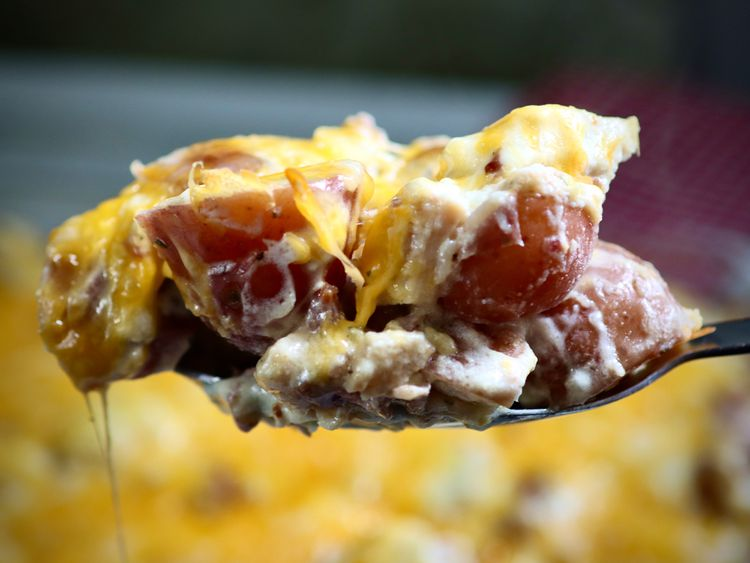

Chicken Bacon Ranch Potato Casserole

This chicken bacon ranch potato casserole is creamy, cheesy, gooey, and
savory—a favorite in our house, and it will surely be in yours, too.
Ingredients
- cooking spray
- 3 cups diced cooked chicken
- 3 pounds diced baby red potatoes
- 1 cup chopped cooked bacon
- 2 cups shredded Cheddar Jack cheese,divided
- 1(1 ounce)packet ranch dressing mix
- 1 cup sour cream
- 1/4 cup mayonnaise
- 1/4 cup heavy cream
Home